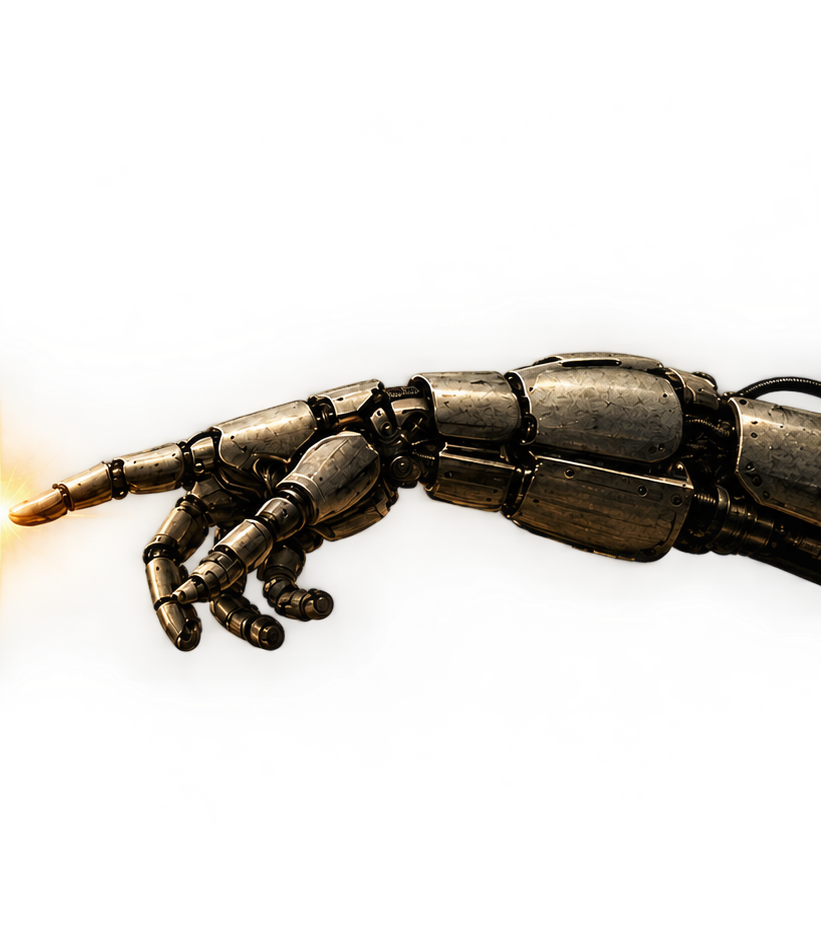

Você sabia que a inteligência artificial está transformando nossas vidas, revolucionando o
mercado de
trabalho e também impactando o meio ambiente?
Ao longo desta jornada, vamos explorar como essa tecnologia funciona, o que ela está mudando
e o que
existe por trás de toda essa evolução.
IA e o Futuro
do trabalho
Ela deixou de ser apenas uma ideia do futuro.
Ela já está transformando a forma como criamos, aprendemos e trabalhamos.

COMO UMA
I.A FUNCIONA?
RECEBE
A informação chega até a IA.
ANALISA
A informação é interpretada.
PROCESSA
Padrões e possibilidades são processados.
RESPONDE
O resultado volta para o usuário.
O FUTURO JÁ COMEÇOU SÉCULO XXI
Entramos
revolução da
Entramos
na era da
revolução da
inteligência artificial.
A Inteligência Artificial está deixando de ser apenas uma tecnologia emergente e começando a transformar a forma como produzimos, trabalhamos e criamos.
Assim como a Revolução Industrial mudou profundamente o trabalho humano, a inteligência artificial pode marcar uma nova transformação na relação entre pessoas, tecnologia e trabalho.
EXPLORE OS IMPACTOSUMA NOVA REVOLUÇÃO
O impacto em cada setor.
- 01 /
PROGRAMAÇÃO
A IA pode auxiliar na criação, análise e manutenção de sistemas.
- 02 /
DESIGN
Novas ferramentas aceleram a criação e a experimentação visual.
- 03 /
MARKETING
A análise de dados e a produção de conteúdo podem ser automatizadas e ampliadas.
- 04 /
FINANÇAS
Sistemas inteligentes podem analisar grandes volumes de informações e apoiar decisões.
- 05 /
INDÚSTRIA
Automação, robótica e sistemas inteligentes transformam processos produtivos.
- 06 /
ATENDIMENTO
Chatbots e assistentes inteligentes assumem parte das tarefas de atendimento.
A TRILHA: O FUTURO COMEÇA COM VOCÊ

Estamos entrando em uma nova era. A inteligência artificial está transformando profissões, indústrias e a maneira como aprendemos e trabalhamos.
Países como a China estão investindo nessa transformação. O Brasil também precisa preparar seus jovens para esse futuro, garantindo que as oportunidades não sejam exclusivas de quem possui mais recursos financeiros.
A Trilha nasce com um propósito: ajudar jovens a descobrir suas capacidades, desenvolver habilidades e encontrar oportunidades para construir um futuro melhor.
Como queremos ajudar?
Carreira de aptidão
Identificar interesses, habilidades e potenciais para explorar carreiras que façam sentido para cada pessoa.
Cursos e capacitação
Aproximar os jovens de cursos e conhecimentos que permitam desenvolver novas habilidades e ampliar suas oportunidades.
Concursos públicos
Orientar quem deseja ingressar no serviço público, com informações sobre concursos, conteúdos e preparação.
Potencializar com IA
Ensinar os jovens a utilizar a inteligência artificial para estudar, aprender, resolver problemas e desenvolver suas próprias capacidades.
Mas, antes de construir essa Trilha, queremos ouvir você.
Esta é uma demonstração inicial de uma ideia que queremos desenvolver junto com os jovens. Queremos entender suas dificuldades, seus objetivos e as oportunidades de que precisam.
O que mais dificulta seu acesso aos estudos? Qual profissão você gostaria de conhecer? O que gostaria de aprender se tivesse essa oportunidade?
Acreditamos que o talento está em todos os lugares, mas as oportunidades ainda não chegam a todos. Queremos ajudar a mudar essa realidade.